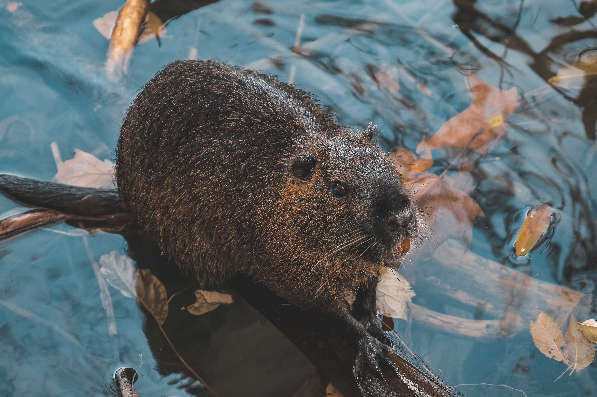
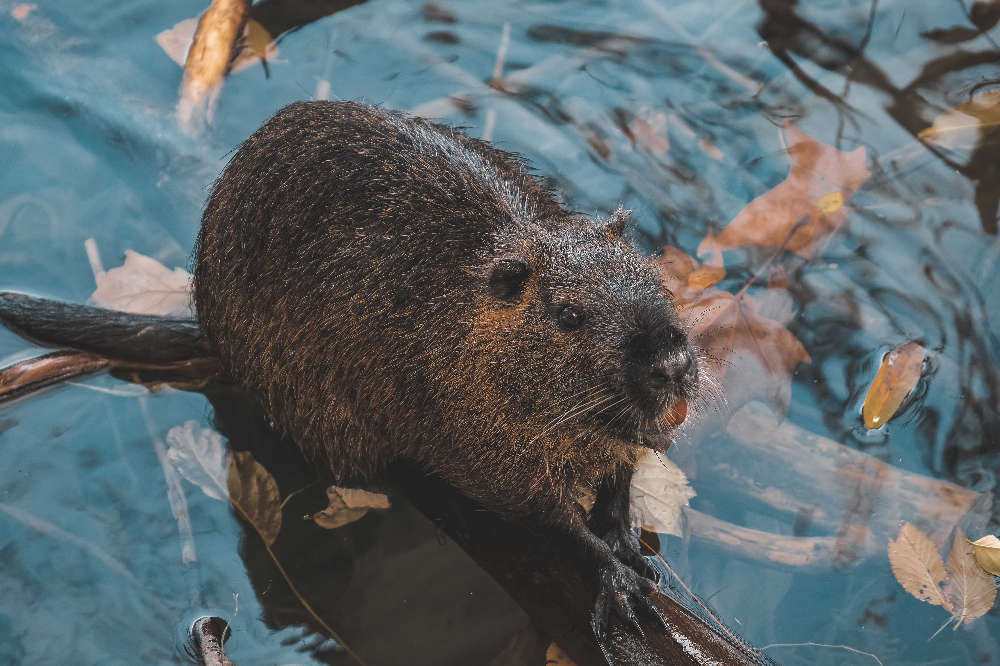

Discover the American Wilderness
Venture into the heart of the American wilderness and connect with the rugged beauty of North America's most captivating species. Our American area showcases the incredible bison, the mighty moose, and the industrious beaver - each with their own unique charm and allure.
Immerse yourself in the rich tapestry of the American landscape, as you learn about the vital roles these animals play in their ecosystems and the importance of conservation efforts in preserving their habitats. Join us for guided tours, educational talks, and special events that celebrate the diverse wildlife of the American continent.
Meet the Stars of Our American Wilderness
Bison:
Introducing our robust bison herd, led by the mighty Thunder, and his companions, Storm and Breeze. These magnificent creatures, often referred to as buffalo, are symbols of the American West and once roamed the plains in vast numbers. Observe our bison as they graze on the grasslands, showcasing their strength and resilience. Learn about their historical significance, their role in the ecosystem, and the conservation efforts that have helped restore their populations in the wild.


Moose:
Meet our majestic moose duo, Maple and Forest. These awe-inspiring animals are the largest members of the deer family and are known for their towering stature and impressive antlers. Watch as Maple and Forest roam our American area, foraging on aquatic vegetation and demonstrating their exceptional swimming abilities. Discover more about their unique adaptations, social structure, and the ongoing conservation programs aimed at protecting their habitats and populations.


Beavers:
Say hello to our industrious beaver family, Chip and Willow, along with their adorable kits. These remarkable rodents are known as nature's engineers, with their ability to build intricate dams and lodges that play a vital role in maintaining healthy wetland ecosystems. Observe our beavers at work as they construct and maintain their impressive structures, using their sharp teeth and powerful tails. Learn about their fascinating social behaviors, their importance in the ecosystem, and the conservation efforts in place to protect these incredible creatures.
 
